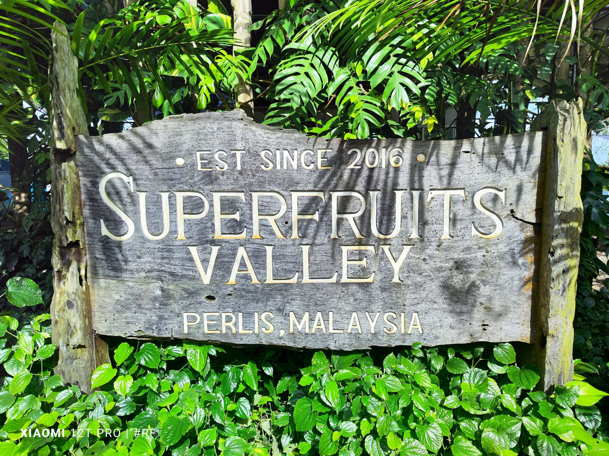

Farm Operator · Agro-Tourism Guide · Agricultural Graduate
"You must be resilient and hardworking. It is not just about physical strength — you must also think critically, embrace technology, and continuously learn about plants and their natural habitats."

Cheku Asjad bin Cheku Sabri is a young and passionate farm operator aged 28, originally from Johor, who has chosen to dedicate his career to agricultural tourism in Perlis. With hands-on experience managing one of Malaysia's largest variety farms, he bridges the gap between traditional farming and modern tourism, creating meaningful experiences for both local and international visitors. With a mastery over 300 diverse plant species, Cheku Asjad is not just a farm operator, but a pioneer in modern agrotechnology. His journey proves that with passion and academic discipline, the youth can redefine the landscape of Malaysian agriculture.
Holds a Degree in Agriculture from UMS and a Diploma from UiTM — combining theoretical knowledge with real-world expertise.
Manages over 300 varieties of plants including exotic species like gac, finger lime, rose guava, and figs — plants valued for their medicinal and commercial properties.
Attracts visitors from KL, Johor, and international countries — putting Perlis on the map as an agro-tourism destination of national significance.